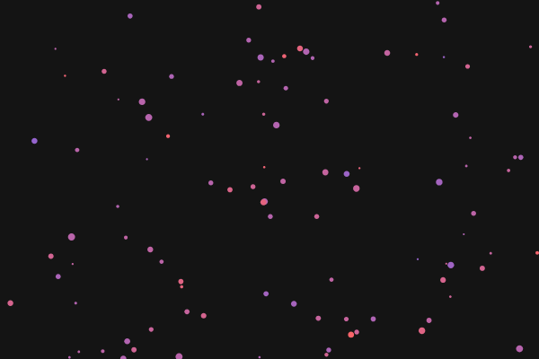
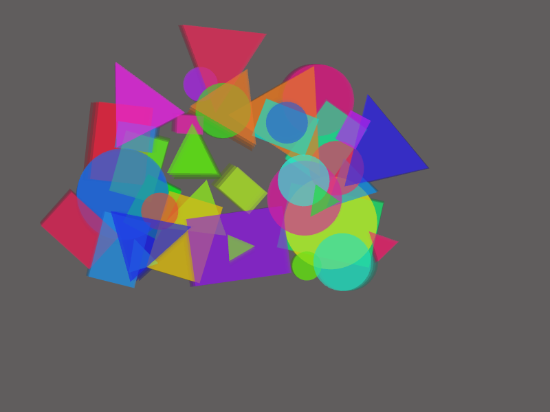
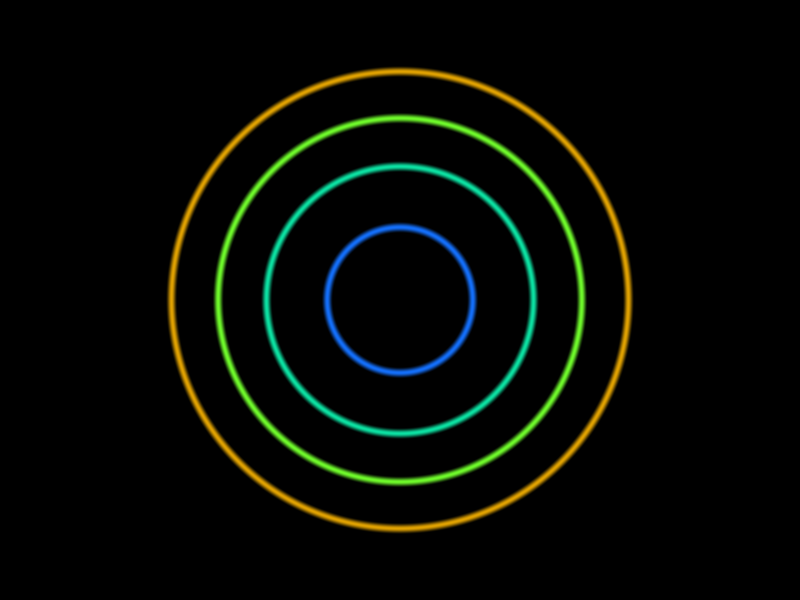
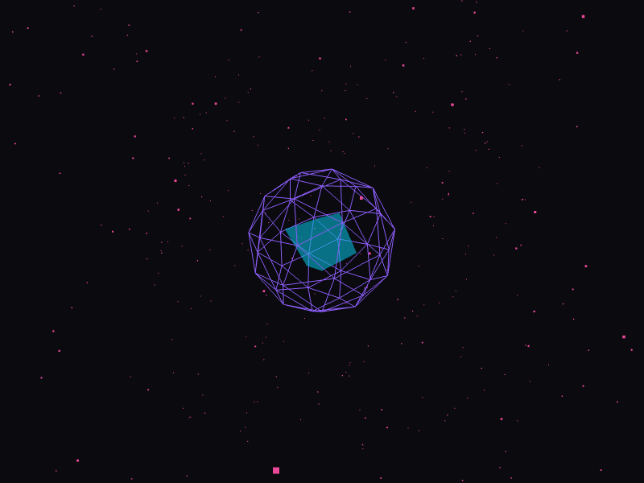

The AI-powered creative coding agent that generates, iterates, and improves generative art. See what it actually creates.
These are actual screenshots from Liminal-generated code. What you see is exactly what the AI created.
Prompt: "calming blue particles flowing like water"

// P5.js generative art with Perlin noise flow field
function draw() {
for (let x = 0; x < width; x += 20) {
for (let y = 0; y < height; y += 20) {
let n = noise(x * 0.01, y * 0.01, frameCount * 0.01);
let angle = n * TWO_PI * 2;
let px = x + cos(angle) * 15;
let py = y + sin(angle) * 15;
stroke(100 + n * 100, 150 + n * 80, 255, 150);
line(x, y, px, py);
}
}
}Prompt: "colorful geometric shapes with overlapping transparency"

// Colorful geometric shapes with alpha blending
function setup() {
createCanvas(800, 600);
colorMode(HSB, 360, 100, 100, 100);
}
function draw() {
clear();
for (let i = 0; i < 15; i++) {
let x = random(width);
let y = random(height);
let size = random(50, 150);
fill(random(255), random(255), random(255), 50);
noStroke();
ellipse(x, y, size, size);
}
}Prompt: "organic patterns with Perlin noise and soft colors"
// Soft organic patterns using noise
function draw() {
loadPixels();
for (let y = 0; y < height; y++) {
for (let x = 0; x < width; x++) {
let n = noise(x * 0.005, y * 0.005, frameCount * 0.01);
let c = color(n * 255, n * 200 + 50, n * 150 + 100, 255);
set(x, y, c);
}
}
updatePixels();
}Real-time WebGL fragment shader

// GLSL fragment shader
precision mediump float;
uniform float u_time;
void main() {
vec2 p = (gl_FragCoord.xy * 2.0 - u_resolution)
/ min(u_resolution.x, u_resolution.y);
float d = length(p);
vec3 color = vec3(0.0);
for (float i = 1.0; i < 5.0; i++) {
float circle = smoothstep(0.02, 0.0,
abs(d - i * 0.2 + sin(u_time + i) * 0.05));
vec3 circleColor = 0.5 + 0.5 *
cos(u_time * 0.5 + i + vec3(0.0, 2.0, 4.0));
color += circleColor * circle;
}
gl_FragColor = vec4(color, 1.0);
}Procedural noise with color gradients
// Noise-based color gradients
float noise(vec2 st) {
vec2 i = floor(st);
vec2 f = fract(st);
vec2 u = f * f * (3.0 - 2.0 * f);
return mix(mix(a, b, u.x), mix(c, d, u.x), u.y);
}
void main() {
vec2 p = uv * 3.0;
float n = noise(p + u_time * 0.2);
n += 0.5 * noise(p * 2.0 - u_time * 0.3);
vec3 color = mix(
vec3(0.1, 0.0, 0.3),
vec3(0.0, 0.5, 0.8),
n
);
gl_FragColor = vec4(color, 1.0);
}Animated icosahedron with particles

// Three.js 3D scene
import * as THREE from 'three';
const geometry = new THREE.IcosahedronGeometry(1, 1);
const material = new THREE.MeshBasicMaterial({
color: 0x8b5cf6,
wireframe: true
});
const mesh = new THREE.Mesh(geometry, material);
scene.add(mesh);
// Particles
const positions = [];
for (let i = 0; i < 500; i++) {
positions.push(
(Math.random() - 0.5) * 8,
(Math.random() - 0.5) * 8,
(Math.random() - 0.5) * 8
);
}
const particles = new THREE.Points(
geometry, material
);
scene.add(particles);Strudel and Hydra patterns you can run live in your browser
stack(
s("hh ~ hh ~", 1/4, gain=0.4).slow(2),
s("bd ~ sd bd ~", 1, gain=0.8),
s("[c2 c2 eb2]*8", 1/8, gain=0.6)
.room(0.5).slow(2),
iter(8, s("amaj7", 1/2, gain=0.5)
.room(0.6).slow(2))
).slow(2)🎧 What it sounds like: Fast hi-hats, kick-snare drum pattern, rolling bassline, and A-major 7th chord stabs every 8 bars. Hypnotic and minimal.
osc(30, 0.1)
.color(1.5)
.kaleid(4)
.scale(0.8)
.modulate(
osc(20, 0.05).rotate(0.5),
0.4
)
.modulate(
src(0).scale(0.5),
a("<0.1 0.2>")
)
.out()📺 What it looks like: Mesmerizing kaleidoscopic patterns that rotate and shift colors. Audio reactivity makes patterns pulse with the beat.
Not just code generation—real creative intelligence
Liminal critiques its own output and iteratively improves. Each generation gets better as it learns what works.
7 specialized AI personas generate in parallel, then vote on the best result. Get diverse, creative outputs.
Your past work is digested into reusable seeds. The system learns from your preferences and builds on successes.
Interview-style creative sessions. Liminal asks the right questions to understand your vision.
Perlin noise, flow fields, cellular automata, L-systems, raymarching, and many more built-in techniques.
MAP-Elites diversity maintenance ensures exploration of the entire creative space, not just local optima.
Simple commands for creative coding
liminal generate "blue particles flowing like water"liminal chatliminal generate "abstract art" --use-swarmliminal serveInstall Liminal and start generating beautiful generative art in minutes.